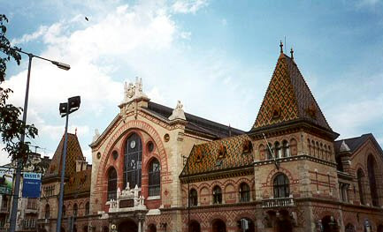

4. The Central Market Hall
The building of the Market Hall was constructed according to the plans of Samu Pecz (1854-1922) between 1894 and 1896. The Central Market Hall was one of the greatest investments of Károly Kamermayer, the firs mayor of Budapest. It opened to the customers in 1897, the same year as the neighbouring Economic University. It is one of the most beautiful works among the brick-buildings of the Hungarian history. The characteristics of neo-gothic style can be observed on the main entrances. The hall itself has a 150-meters-long nave and six side wings on either sides. Including the cellar and the gallery, the building is several stories high, and has some 10 500 m2 available for sale. The roof above the market has a huge steel structure. Outside, the facade is pyrogranite decor by colourful Zsolnay - a Hungarian tile factory with an international reputation. The building was dedicated as a monument in 1977. During the few next decades it was badly damaged, but by 1994 its renovation was completed. In 1999 it won the Prix d’Excellence award, which is an international prize of FIABCI and the most significant architectural award in the world.

Just steps from the Danube on the Pest side, at the foot of the Liberty Bridge, was the tollhouse where goods transported on the river were cleared. The closeness to water explains why one of the markets of Pest was created at the edge of two parts of the city the Downtown and Ferencváros. At the beginning, the ferries sailed just under the building. A tunnel was built from the building's cellars to the river's embankment. Even today an inscription can be seen from the quay-side street, stating “Tunnel to the Central Market Hall".
The Vámház street ends up in Fõvám square. In the middle of the square there is a monument to the soldiers of the First World War. Also, on the second house of the square, a plaque shows that the Hungarian author Zsigmond Móricz lived and worked there.